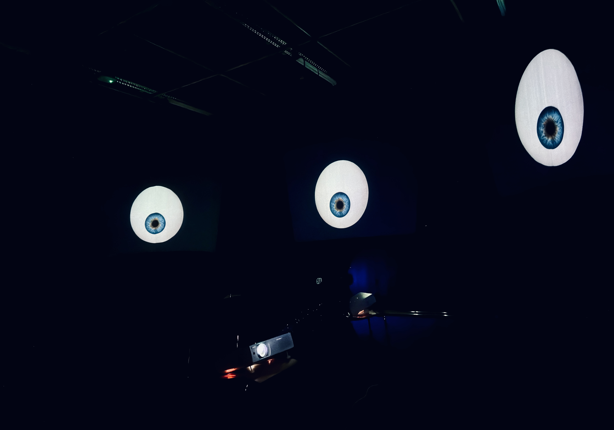

When a symbol designed to create understanding also changes how a person is seen.
The project explored how the Sunflower Lanyard functions as a social symbol for invisible disabilities, and how visibility can both create understanding and contribute to stigma, judgement and social categorisation.
Rather than redesigning the lanyard as a product, we used Critical Design and Research through Design to investigate how stigma could be made visible, felt and reflected back to the people observing it.
Turning the observer into the observed.
Staring Right Back was developed as an immersive installation exploring the bodily experience of being watched, judged and socially exposed.
Projected eyes and recorded voices turn the gaze towards the participant, shifting their position from observer to observed.
The intention was not simply to explain stigma, but to create a situation in which elements of that experience could be felt through the body.

Designing reflection through a bodily role reversal.
Through the project we developed the concept of Embodied Mirroring: a design approach in which participants do not only engage physically with an experience, but are placed in a situation that mirrors another person's embodied experience.
In Staring Right Back, the experience of being stared at is turned towards the observer through sensory and affective interaction.
The aim is to create space for recognition, empathy and self-reflection through the participant's own bodily experience.
Research & process
The project developed through exploratory experiments, prototyping and iterative testing.
Early studies investigated how the Sunflower Lanyard influenced first impressions and social interpretation before the work moved towards increasingly embodied design experiments.
Design approach
The project used discomfort, visibility and role reversal as design material rather than attempting to solve stigma through a conventional product intervention.
Prototypes were treated as questions that could make invisible social dynamics physically and emotionally present.

Translating a social experience into an immersive environment.
Projection, interactive visuals and audio were combined to create an environment in which the participant became the focus of attention.
The physical setup was designed to intensify the sensation of exposure and make the relationship between looking and being looked at difficult to ignore.
Methods
Research through Design
Critical Design
Speculative Design
Embodied Interaction
Prototyping
Qualitative Research
Technology
Projection
Interactive Visuals
Audio
Physical Computing
Digital Prototyping